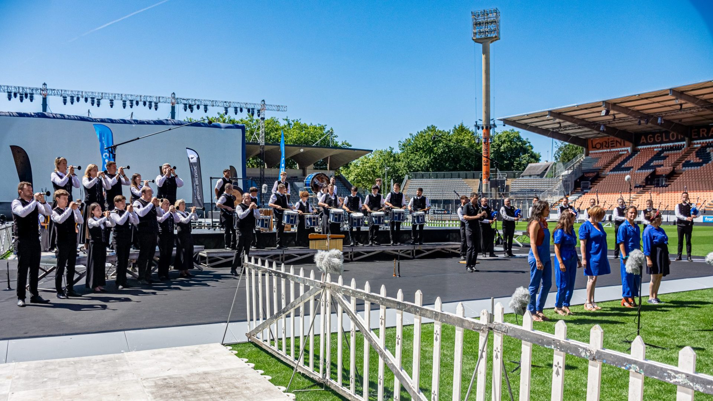

La musique bretonne
Batteur en caisse claire écossaise depuis 2022, je fis mes premiers pas dans l'univers des bagadoù au sein du bagad bro konk kerne avec une première participation au championnat national des bagadoù première catégorie en 2023 à l'occasion du festival interceltique de Lorient. A suivi diverses prestations à l'occasion de différents festivals tels que : le FIL, le festival des filets bleus, festival de cornouaille ou encore une animation d'un spectacle au Puy du Fou en novembre 2023.

championnat de première catégorie, Lorient 2024
(source :Bagad Bro Konk Kerne)
En 2025, je rejoins le Bagad Kemper où je participe au spectacle Korventenn présenté au théâtre de Cornouaille lors du festival de Cornouaille à Quimper, sans oublier le trophée Polig Monjarret organisé lors du FIL.
La musique écossaise
Complémentaire à la musique bretonne, je rejoins en 2025 l'Aven District Pipe Band, un groupe de musique écossaise traditionnelle. Nous avons participé au Championnat du monde de Pipe Band à Glasgow en grade 3B en 2025.